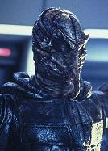
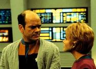
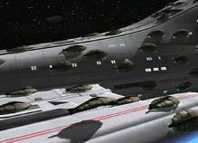
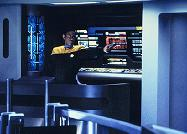
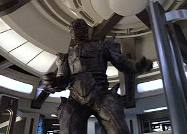
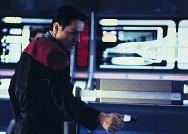
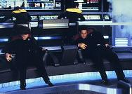
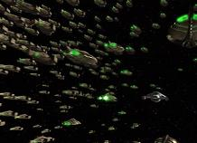

|
MANCHETE
DO EPISDIO
Episdio traz ao para a nave, um
Doutor hologrfico gag e seu criador
Episdio
anterior | Prximo
episdio
Sinopse:
Data
Estelar: 50252.3
 Paris
e Torres so confrontados por aliengenas que se materializam em
sua nave auxiliar, disparam uma arma contra eles e desaparecem to
rpido como tinham aparecido. Embora Paris esteja ferido, Torres se
recupera o bastante para lev-los de volta Voyager. Neelix conta
a Janeway que no conhece esses aliengenas por nome, apenas por
reputao. Eles atacam qualquer forasteiro que ousa entrar em seu
territrio, juntando-se em uma nuvem como insetos ferozes.
Infelizmente, traar um curso em volta da vasta fronteira no
possvel, ento Janeway opta por permanecer na rota.
Na enfermaria, o Doutor no consegue
se lembrar de como completar uma operao; os circuitos de memria
do Holograma de Emergncia Mdica parecem estar se degradando. O
nico modo de ajud-lo seria reiniciar seu programa, mas Torres
revela que se fizer isso, todas as memrias que o Doutor acumulou
ao longo dos dois ltimos anos sero perdidas, junto com muito de
sua personalidade. Torres transfere o programa dele para uma recriao
da Estao Jpiter no holodeck, onde seu banco de dados foi
originalmente escrito. L, eles encontram uma verso hologrfica
do Dr. Lewis Zimmerman, o criador do HEM. "Zimmerman"
explica que o problema do Doutor compreensvel, j que o
programa foi feito para rodar apenas por 1.500 horas.
 A
tripulao ajusta os escudos da nave para que ela possa passar
pela rede de sensores dos aliengenas sem ser detectada. Mas,
medida que a Voyager procede, uma pequena nave dispara um pulso polrico
que a torna novamente visvel. A "nuvem" comea a
persegui-la e a tripulao vai aos postos de batalha. As minsculas
naves se prendem Voyager e comeam a drenar sua energia.
Percebendo que cada nave na nuvem est conectada em nvel quntico,
a tripulao cria uma reao em cadeia explosiva que as desativa
a tempo suficiente de atravessar todo o territrio.
 Com
a degradao da memria do Doutor piorando a cada minuto, Kes
convence o programa de Zimmerman a incorporar sua matriz do mdico.
O procedimento funciona, embora leve algum tempo at que saibam se
o Doutor manteve todas as suas memrias.
Comentrios:

possvel identificar duas tramas principais sendo trabalhadas em "The
Swarm". A primeira --e menos relevante-- a travessia da
Voyager pelo territrio de uma nova espcie hostil e misteriosa,
cujo nome nem mencionado na histria. A outra envolve o Doutor.
Se apenas um mdico hologrfico j puro humor, dois so
entretenimento garantido.
Sobre os aliengenas da semana, o
que se pode dizer que h originalidade. Eles so incomunicveis.
A sintaxe de sua lngua no pode ser analisada pelo tradutor
universal, logo a comunicao verbal impossvel. Eles tambm
no falam muito. A nica frase que Harry consegue identificar
"Tarde demais" --isso mexe com a adrenalina do
telespectador. A partir desse momento, o episdio s ao e
aventura.
 Eles
poderiam ser um inimigo em potencial para a srie, mas nunca mais so
vistos. A que est o ponto fraco da histria. A Voyager
consegue escapar muito fcil da ameaa, e os aliengenas desistem
muito rapidamente do ataque. Para um povo to meticuloso com suas
fronteiras, isso meio forado. Alis, a soluo final toda
meio forada e deixa o telespectador um pouco decepcionado. A
Voyager passa 44 minutos se metendo em encrenca, o que deixa a audincia
cheia de adrenalina e ansiedade, mas a a soluo para combater
os aliengenas vem de uma explicao capenga e cheia de
tecnobaboseira proporcionada por Harry Kim. uma decepo. De
toda forma, a apario desses novos e misteriosos aliengenas
uma grande adio ao banco de dados xenobiolgicos da nave
perdida da Federao.
Por sorte, o enfoque principal fica
mesmo no desenvolvimento do personagem de Robert Picardo, o Doutor.
No toa que j virou uma tradio dizer que as histrias
centradas no Doc so sempre boas. No caso de "The Swarm",
aborda-se questes ticas, at filosficas. Novamente tem-se o
sentimento de realidade na srie.
O mdico da nave, um programa de
computador tentando conquistar respeito e autonomia, de novo traz
tona o questionamento "afinal, ele um ser vivo ou uma mquina?",
ao apresentar uma sobrecarga em seu sistema de memria.
 Essa
pergunta pesa muito na hora em que se decide apelar recriao
do Dr. Zimmerman, ao invs de simplesmente reiniciar todo o
programa --procedimento que apagaria as vivncias acumuladas pelo
holograma mdico. Aqui o Doutor mostra o seu valor. J no h dvidas
quanto sua conscincia. Ele tem amigos, respeito. Ele j no
o mesmo do episdio-piloto.
Os produtores e roteiristas da srie
reconhecem no terceiro ano a potencialidade do personagem. Assim, os
fs podem esperar por diversas outras tramas envolvendo-o. Nesta
temporada, "Real Life" e "Darkling"
so exemplos.
 Janeway
est entre os outros destaques do episdio. Ela comeou a
temporada bem mais audaciosa e prtica. estranho como se
preocupava tanto com a Primeira Diretriz at pouco tempo atrs e
agora arruma meios de ocultar a Voyager de sensores para atravessar
fronteiras territoriais sem a permisso dos habitantes locais.
Talvez tenha sido a experincia final com os Kazons... sempre
interessante ver esse lado "Kirk" da capit. Muitos acham
que por a que a srie deveria ter seguido. Seria mais
pertinente, honraria melhor a premissa, seria mais realista, crvel.
 Comentrios
quanto aos efeitos especiais so dispensveis. s se lembrar
de cenas como a nuvem de naves perseguindo a Voyager.
S mais uma coisa, a ttulo de
curiosidade. Os fs tambm devem prestar bastante ateno em Tom
Paris e B'Elanna Torres nesta temporada
Citaes:
Doutor - "All the soprani
seem to have the most irritating personalities. These woman are
arrogant, superior, and condescending. I can't imagine anyone
behaving that way."
("Todas os sopranos parecem ter as personalidades mais
irritantes. Essas mulheres so arrogantes, superiores, e
condescendentes. No consigo imaginar algum se comportando
assim.")
Trivia:
 Robert Picardo deu suas prprias sugestes sobre o Doutor para os
produtores e roteiristas. Foi dele a idia da perda de memria do
holograma por causa do excesso de informaes inteis
armazenadas, como pera.
Robert Picardo deu suas prprias sugestes sobre o Doutor para os
produtores e roteiristas. Foi dele a idia da perda de memria do
holograma por causa do excesso de informaes inteis
armazenadas, como pera.
Tim Russ achou que seu personagem no foi muito bem tratado no episdio.
Quando perguntado sobre a ausncia de protestos de Tuvok aps a
deciso de Janeway de cruzar aquele espao aliengena hostil,
Russ respondeu: "Ele objetou na sala de reunies e eu pedi aos
produtores por mais que uma objeo. Achei que o personagem devia
ter traado o plano de vo por aquela regio."
Ficha
tcnica:
Histria de Michael Sussman
Direo de Alexander Singer
Exibido em 25/09/1996
Produo: 048
Elenco:
Kate Mulgrew como
Kathryn Janeway
Robert Beltran como Chakotay
Roxann Biggs-Dawson como B'Elanna Torres
Robert Duncan McNeill como Tom Paris
Jennifer Lien como Kes
Ethan Phillips como Neelix
Robert Picardo como Doutor
Tim Russ como Tuvok
Garrett Wang como Harry Kim
Elenco convidado:
Carole Davis como Diva
Steven Houska como Chardis
Episdio
anterior | Prximo
episdio
|